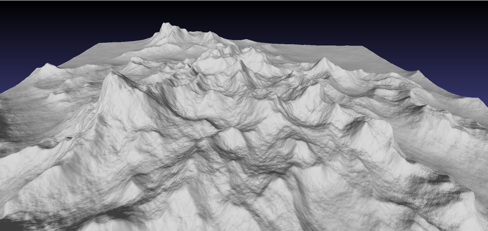
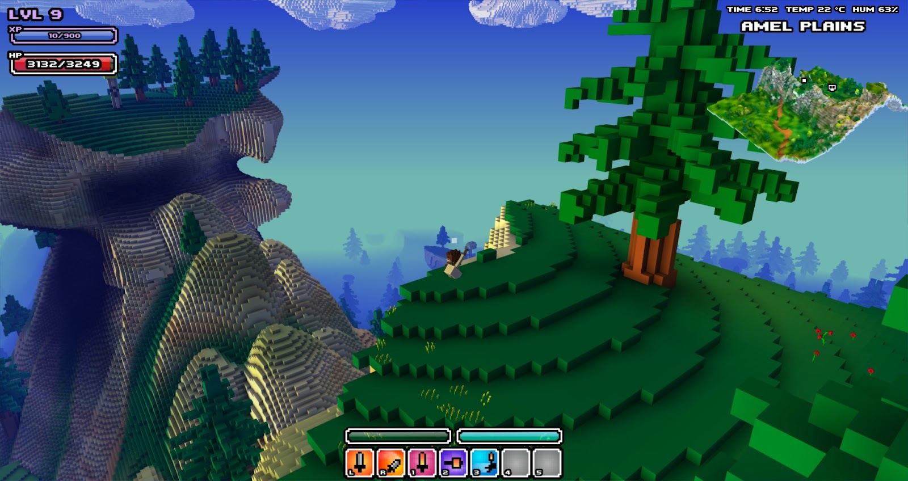
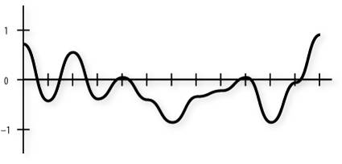

Procedurally Generated Terrain
- What does it do ?
- What does it mean ?
- How does it work ?


What does it mean ?
- 1 specific Key / Terrain
- 1 calculation / Coordinate
- Map file size = Key size !

How does it work ?
- f(x,y,z) => Object ( height, structure, etc. )
- Modifications have to be saved too
- Extremely efficient for raw terrains
- Can be done quite fast
Thank you for listening !